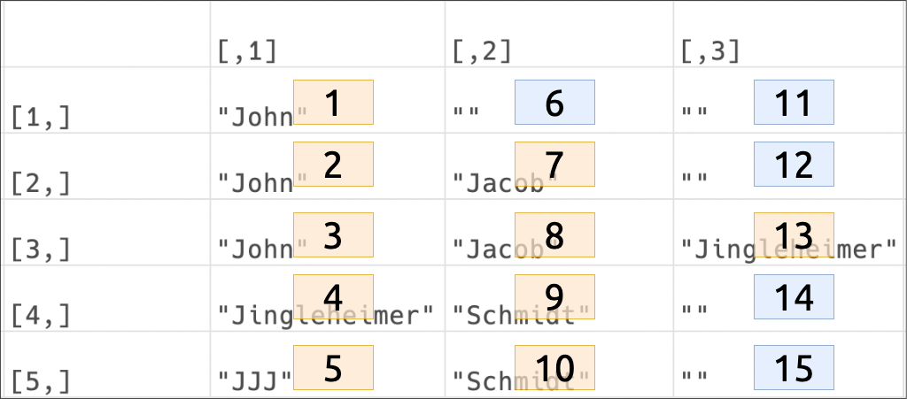

This post comes from a Stackoverflow question that I’ve revisited numerous times over the years.
Stackoverflow: “Split data frame string column into multiple columns”
Let’s load the tidyverse and get started!
Load packages
library(tidyverse)Create some messy data
Below is an example tibble with a jumbled name column (JJJSBefore),
JJJSBefore <- tibble::tribble(
~value, ~name,
29L, "John",
91L, "John, Jacob",
39L, "John, Jacob, Jingleheimer",
28L, "Jingleheimer, Schmidt",
12L, "JJJ, Schmidt")All the possible solutions
This particular question was posed 9 years and 6 months ago at the time of this writing, so there are quite a few solutions listed. Personally, I liked the approach Yannis-P took because 1) it offers a tidyverse solution and 2) it’s written as a function.
I’ve copied Yannis-P’s comment on the proposed solution below:
We can’t use
dplyrseparate()because we don’t know the number of the result columns before the split, so I have then created a function that usesstringrto split a column, given the pattern and a name prefix for the generated columns.
Original split_into_multiple()
Here is the function:
split_into_multiple <- function(column, pattern = ", ", into_prefix){
cols <- str_split_fixed(column, pattern, n = Inf)
# Sub out the ""'s returned by filling the matrix
# to the right, with NAs which are useful
cols[which(cols == "")] <- NA
cols <- as.tibble(cols)
# name the 'cols' tibble as 'into_prefix_1',
# 'into_prefix_2', ..., 'into_prefix_m'
# where m = # columns of 'cols'
m <- dim(cols)[2]
names(cols) <- paste(into_prefix, 1:m, sep = "_")
return(cols)
}How it works
Let’s break down the split_into_multiple() function’s components:
The first step takes an input column and apply the stringr::str_split_fixed() function, which returns “a character matrix with n columns.”
cols <- stringr::str_split_fixed(column, pattern, n = Inf)By setting n to Inf, the number of items to split the string into is infinite.
cols <- stringr::str_split_fixed(string = JJJSBefore$name,
pattern = ", ",
n = Inf)
cols
## [,1] [,2] [,3]
## [1,] "John" "" ""
## [2,] "John" "Jacob" ""
## [3,] "John" "Jacob" "Jingleheimer"
## [4,] "Jingleheimer" "Schmidt" ""
## [5,] "JJJ" "Schmidt" ""After the name column is split into a character matrix of split columns (cols), the split_into_multiple() function uses base::which() to identify the empty columns in the matrix.
base::which(cols == "")
## [1] 6 11 12 14 15base::which() returns a numerical vector that correspond to the empty columns in the cols matrix.

The split_into_multiple() function subsets the cols matrix with the output from which(cols == "") and assigns NAs to the locations identified above.
cols[which(cols == "")] <- NA
cols
## [,1] [,2] [,3]
## [1,] "John" NA NA
## [2,] "John" "Jacob" NA
## [3,] "John" "Jacob" "Jingleheimer"
## [4,] "Jingleheimer" "Schmidt" NA
## [5,] "JJJ" "Schmidt" NANext, we need a tibble, not a matrix, so split_into_multiple() converts cols into a tibble with cols <- as.tibble(cols).
as.tibble() warning
as.tibble() throws the following warning,
1: `as.tibble()` is deprecated as of tibble 2.0.0.
Please use `as_tibble()` instead.
The signature and semantics have changed, see `?as_tibble`.
This warning is displayed once every 8 hours.I’ll replace it with as_tibble() from tibble.
cols <- tibble::as_tibble(cols, .name_repair = "universal")
colsas_tibble() warning
Now tibble::as_tibble() is throwing this warning,
2: The `x` argument of `as_tibble.matrix()` must have column
names if `.name_repair` is omitted as of tibble 2.0.0.
Using compatibility `.name_repair`.
This warning is displayed once every 8 hours.If I supply the .name_repair = "universal" argument, I get the following column names:
This might be an issue down the road, so I’ll address it when I make some adjustments to the split_into_multiple() function.
Now we have a tibble, but we’re missing the original value column from JJJSBefore (see below).
split_into_multiple() then takes the second value from the base::dim() function (which is short for dimensions).
The second number from base::dim() is the number of columns in the cols tibble,
m <- base::dim(cols)[2]
m
## [1] 3I can also get this with base::ncols()
base::ncol(cols)
## [1] 3Finally, split_into_columns() uses base::paste() to combine m with into_prefix to create the new column base::names() (separated by an underscore "_").
The return() value is cols with the new names.
into_prefix <- "name"
base::paste(into_prefix, 1:m, sep = "_")
## [1] "name_1" "name_2" "name_3"Put all together, the function works like so,
split_into_multiple(column = JJJSBefore$name,
pattern = ", ",
into_prefix = "name") -> JJJAfter
JJJAfterAddress tibble warnings
The as_tibble()/as.tibble() warning can be addressed by assigning column names with base::colnames() to the matrix before converting this into a tibble.
# create cols matrix
cols <- str_split_fixed(JJJSBefore$name,
pattern = ", ",
n = Inf)
# replace "" with NAs
cols[which(cols == "")] <- NA
# get cols
m <- dim(cols)[2]
# assign names
into_prefix <- "name"
colnames(cols) <- paste(into_prefix, 1:m, sep = "_")
# create tibble
cols <- as_tibble(cols)
colsAdd arguments
I’ll also add a few arguments:
- an argument for data (
data =),
- a default pattern argument (
pattern = [^[:alnum:]]+),
dplyr::bind_cols()to combine the new output columns with the original inputdata.frame/tibble, and
- I changed the names of the inputs to have an
in_prefix, and the outputs to have anout_prefix
New split_into_multiple()
My adjusted split_into_multiple() function is below.
split_into_multiple <- function(data, col, pattern = "[^[:alnum:]]+", into_prefix){
# use regex for pattern, or whatever is provided
in_pattern <- pattern
# convert data to tibble and add ,.name_repair
in_data <- tibble::as_tibble(data)
# convert col to character vector
in_col <- base::as.character(col)
# split columns into character matrix
out_cols <- stringr::str_split_fixed(in_data[[in_col]],
pattern = in_pattern,
n = Inf)
# replace NAs in matrix
out_cols[base::which(out_cols == "")] <- NA
# get number of cols
m <- base::dim(out_cols)[2]
# assign column names
base::colnames(out_cols) <- base::paste(into_prefix, 1:m, sep = "_")
# convert to tibble
out_cols <- tibble::as_tibble(out_cols)
# bind cols together
out_tibble <- dplyr::bind_cols(in_data, out_cols)
# return the out_tibble
return(out_tibble)
}Now I’ll test split_into_multiple() with JJJSBefore and see what I get:
JJJSBefore %>%
split_into_multiple(data = .,
col = "name",
into_prefix = "name") -> JJJAfter
JJJAfterI’ll test split_into_multiple() on the Before data in the original example, too.
BeforeBefore %>%
split_into_multiple(data = .,
col = "type",
pattern = "_and_",
into_prefix = "type")What if there is a data.frame/tibble with a bunch of different characters we need to split on?
I’ll test this one the WorseThanBefore data below.
WorseThanBefore <- tibble::tribble(
~attr, ~type,
1L, "foo, bar",
30L, "foo-bar/2",
4L, "foo...bar...2...bar...3",
6L, "foo | bar")
WorseThanBeforeWe’ll use split_into_multiple() on WorseThanBefore without giving an argument for pattern.
WorseThanBefore %>%
split_into_multiple(data = .,
col = "type",
into_prefix = "type")This removed any sequence of non-alphanumeric values. split_into_multiple() retains the original column, which I can remove using dplyr::select() helpers (like above).
JJJSBefore %>%
split_into_multiple(data = .,
col = "name",
into_prefix = "name") %>%
dplyr::select(value, dplyr::contains("name_"))In closing
This split_into_multiple() function has been really helpful for me in the last few projects I’ve been working on. I hope you can use it too!
Noteworthy non-tidyverse alternatives
I also liked the cSplit() function from the splitstackshape package because it can take multiple columns and can be tidied up all in one go!
library(splitstackshape)
# original
JJJSBefore
## # A tibble: 5 x 2
## value name
## <int> <chr>
## 1 29 John
## 2 91 John, Jacob
## 3 39 John, Jacob, Jingleheimer
## 4 28 Jingleheimer, Schmidt
## 5 12 JJJ, Schmidt# wide
JJJSBefore %>%
splitstackshape::cSplit(indt = .,
splitCols = "name",
sep = ", ",
drop = FALSE,
direction = "wide")
## value name name_1 name_2 name_3
## 1: 29 John John <NA> <NA>
## 2: 91 John, Jacob John Jacob <NA>
## 3: 39 John, Jacob, Jingleheimer John Jacob Jingleheimer
## 4: 28 Jingleheimer, Schmidt Jingleheimer Schmidt <NA>
## 5: 12 JJJ, Schmidt JJJ Schmidt <NA># long
JJJSBefore %>%
splitstackshape::cSplit(indt = .,
splitCols = "name",
sep = ", ",
direction = "long")
## value name
## 1: 29 John
## 2: 91 John
## 3: 91 Jacob
## 4: 39 John
## 5: 39 Jacob
## 6: 39 Jingleheimer
## 7: 28 Jingleheimer
## 8: 28 Schmidt
## 9: 12 JJJ
## 10: 12 SchmidtHuge thanks to Hadley and Yannis P. and everyone else on Stackoverflow!
tidyverse_logo()
## ⬢ __ _ __ . ⬡ ⬢ .
## / /_(_)__/ /_ ___ _____ _______ ___
## / __/ / _ / // / |/ / -_) __(_-</ -_)
## \__/_/\_,_/\_, /|___/\__/_/ /___/\__/
## ⬢ . /___/ ⬡ . ⬢